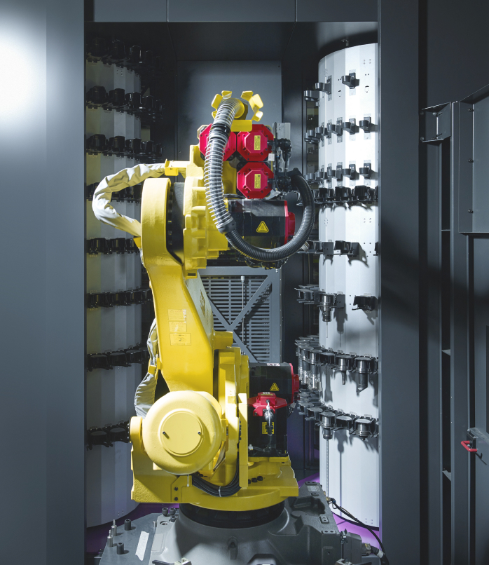

TechRevolution fue fundada por Oier
Martínez Mateos, graduado en Industria Digital por la
Universidad de Deusto, una carrera que combina conocimientos en tecnología, ingeniería y gestión
para formar profesionales capaces de liderar la transformación digital en empresas industriales y
tecnológicas. Esta formación integral permitió a Oier aplicar soluciones innovadoras y tecnológicas
a problemas reales, impulsando así la creación de TechRevolution con el objetivo de desarrollar
proyectos que mejoren procesos y aporten valor en el sector tecnológico.
Desde su creación, TechRevolution se ha enfocado en desarrollar proyectos
innovadores que impulsen la transformación digital y mejoren la vida de las personas y las empresas.
Nuestra empresa se guía por valores fundamentales como la innovación constante, el compromiso con la
calidad, la ética profesional y la sostenibilidad. Creemos en el poder de la tecnología para generar
un impacto positivo, fomentando la colaboración, la creatividad y la responsabilidad social en cada
uno de nuestros proyectos. Estos principios nos motivan a buscar siempre soluciones que no solo sean
eficientes, sino que también contribuyan a un futuro más justo y conectado.
